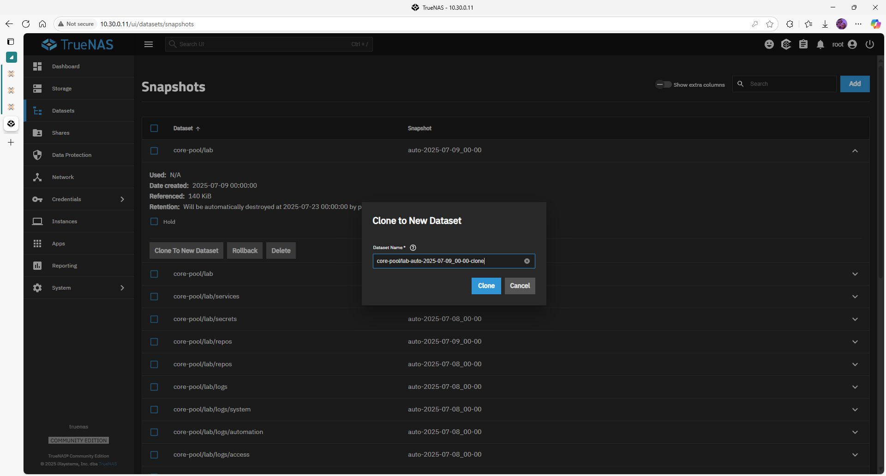

Snapshot Restoration – TrueNAS SCALE
Snapshots are point-in-time copies of datasets. You can:
- Browse them (Shadow Copies)
- Clone to a separate dataset for granular restore
- Rollback an entire dataset after ransomware or data loss
1 – List available snapshots
- Datasets ▸ locate the dataset
- Click the ⋮ (three-dots) ▸ View Snapshots
- All snapshot names + timestamps appear.
2 – Restore individual files (Windows Shadow Copy)
- Open File Explorer →
\\10.30.0.11\lab - Right-click folder ▸ Restore previous versions
- Select a snapshot → Open (browse) or Restore (overwrite)
Requires
vfs_shadow_copy2enabled in SMB service.
3 – Clone a snapshot (GUI)
- Datasets ▸ View Snapshots
- ⋮ next to snapshot ▸ Clone to New Dataset
- Name it e.g.
restore-lab-YYYY-MM-DD▸ Submit

The clone appears as a separate dataset; share it temporarily to extract files.
4 – Rollback an entire dataset
Danger: all changes after the snapshot are deleted.
- View Snapshots ▸ ⋮ on snapshot
- Rollback ▸ Confirm dialog
5 – CLI examples
# Roll back dataset to a specific snap
zfs rollback core-pool/lab@auto-2025-07-08_00-00
# Clone a snapshot
zfs clone core-pool/lab@auto-2025-07-08_00-00 \
core-pool/restore-lab-2025-07-08
Best practices
| Tip | Why |
|---|---|
| Take snapshots before risky changes | Quick safety net |
| Use recursive snapshots | Captures child datasets |
| Combine with Cloud-Sync or Replication | Off-site protection |